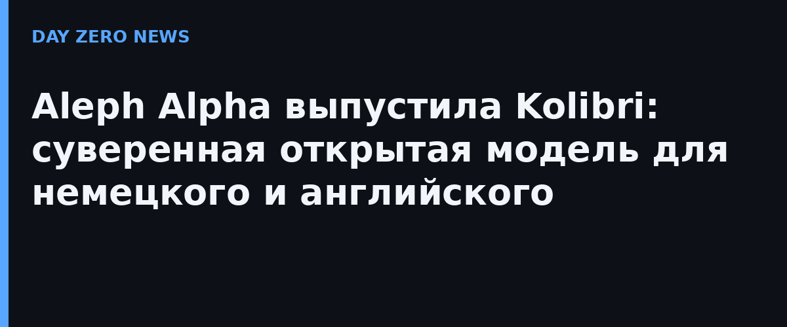

Aleph Alpha 3 октября 2026 года выпустила Kolibri — двуязычную (немецкий и английский) Mixture-of-Experts модель: 78,1 млрд параметров всего, но на каждый токен работают только 3,46 млрд (4,4%). Полные веса выложены на Hugging Face под лицензией Apache 2.0 — модель можно скачать и запускать у себя. Контекст: 262 144 токена нативно, протестирован до 1 048 576. Дата релиза выбрана не случайно — День германского единства, и позиционируется модель как «суверенная»: обучена с нуля на инфраструктуре в Германии и Финляндии, спроектирована с учётом европейского AI Act.
По техотчёту Aleph Alpha (189 страниц), Kolibri обучалась на ~24 трлн токенов, больше пятой части из них — немецкие, на 768 NVIDIA B200; отсечение знаний — 18 июня 2026. Компания заявляет, что модель лежит на «Парето-фронтире» качества к стоимости сервинга на обоих языках и по математике, коду и длинному контексту догоняет модели с вчетверо бо́льшим числом активных параметров, например Nemotron 3 Super. В собственном бенчмарке на немецком Kolibri набирает 70,8 против 69,8 у Qwen3.5 35B-A3B. Веса занимают ~78 ГБ в FP8, поэтому минимум для запуска — две A100/H100 по 80 ГБ или один H200/B200; компания отдаёт плагин aleph-alpha-inference для vLLM.
Aleph Alpha делает ставку на регулируемые отрасли: госуправление, промышленность, аэрокосмос — там, где данные нельзя отправлять в чужие облачные сервисы. Полный цикл от ingestion данных до финальных эвалов заявлен как прозрачный, с целостностью цепочки поставок; деплой полностью на стороне заказчика. Примечательный фон: Aleph Alpha сейчас находится в процессе объединения с канадской Cohere — компании подписали соглашение о сделке, которую обе стороны называют «трансатлантическим суверенным ИИ».
Свои промышленные LLM в России тоже развиваются — YandexGPT и GigaChat активно внедряются в корпоративных и государственных сценариях, хотя и распространяются как облачные сервисы, а не открытые веса. Немецкий ход интересен именно этим: открытые веса вместо облака — суверенность через скачивание, а не через договор с вендором.
Кolibri — редкий случай, когда «региональная» модель выходит сразу с полными весами, техотчётом и инструкцией по запуску: смотреть стоит хотя бы ради того, как далеко уехали маленькие MoE в неанглоязычных задачах.